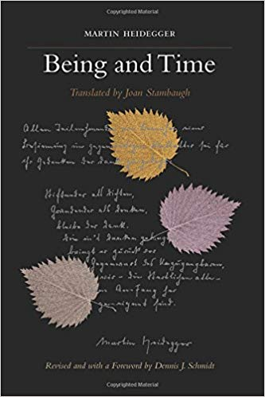
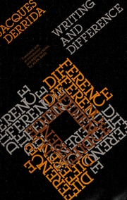
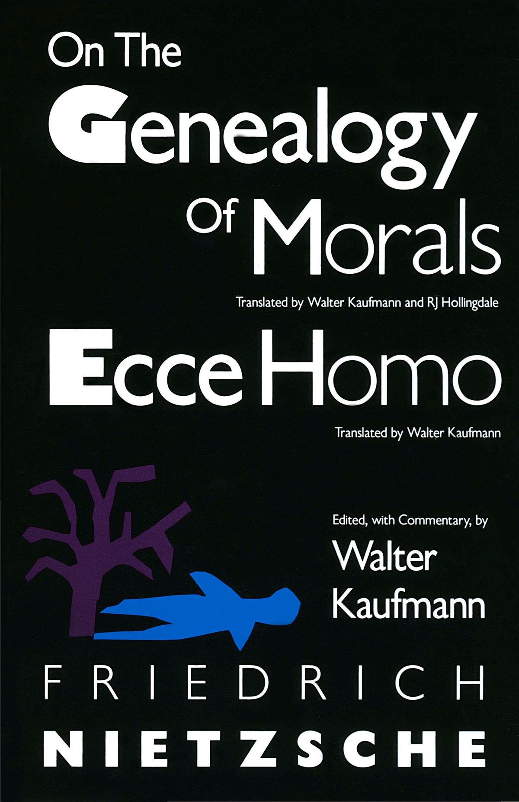

In the spring of 2019, I read Martin Heidegger's Being and Time and some of his later works. I was reading this for a professor and taking notes to help develop a course on Heidegger's Existentialism. The majority of my work was coming up with critiques of Heidegger. However, to critique one must understand precisely. I maintain that Heidegger is an extremely interesting and important figure for the history of philosophy and Existentialism, but do not think many of his conclusions hold up today.

This year, I am going through the works of Jacques Derrida for a professor's online philsophy database to understand how he continues Heidegger's project of deconstructing the premises of Western Philosophy. The way Derrida reads texts to closely to reveal inconsistencies, contradictions, and unjust premises never ceases to amaze me. What more, his philosophy of language, especially in Of Grammatology accords nicely with my other interests in Wittgenstein and Quine.

In the spring of 2020, I will organize and help run a course titled: "Rationality: Its limits, nature, and transcendental inquiry." I created the syllabus and required reading -- from Plato to Rorty, we will examine how different thinkers from each historical period view rationality.Throuhgout the course, students will be expected to think critically about each work and be ready to discuss the implications of each thinker.